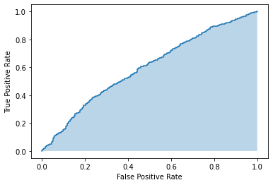

2.機械学習 プロジェクト全体像
機械学習は反復型のプロセス である。手順は大きく下記の手順。本講座ではビジネス視点はあまり扱わずに技術よりの視点でそれぞれを解説します。
プロジェクトスコープの決定
業務改善のためのAIか新規ビジネスのためのAIかをまずは決定する必要がある。
業務改善のためのAIか新規ビジネスのための AI か
- 業務改善における AI長期的に利益を得る。すでに AI を使用・活用する人、モノが存在している。AI の導入により、どのくらいコストが削減できたのか、効率化ができたのかなどが主な KPI となる。
- 新規ビジネスにおける AI 新たに顧客や AI を使用する人、モノを見つける必要がある。AI を導入ビジネスとして売上高・利益率:収益性を評価。売上高と利益の割合を計測する必要がる。
機械学習とソフトウェア導入の違い
機械学習システムに求められる要件
信頼性・拡張性・保守性・適応性
【補足】研究と実務の違い
研究では９割がアルゴリズムを調べる 現場はアルゴリズムにかける時間は３割程度、データ収集や前処理に時間をかける
データエンジニアリング
ETL プロセス データの収集・処理・蓄積これらが行われる基盤があることが AI プロジェクトを成功させるうえで重要
データの収集
データの処理
次にデータ処理を行う。 機械学習はデータから関係性を見つけだすために数値計算を行う。そのためにはまずはテーブルデータ化することが必要。 このための処理を行う。ビックデータを扱うため、Spark などの並列処理技術を使用することが多い。
データの蓄積
3.AI プロジェクトの開発プロセス
ここまで説明した、企画→分析のためのデータ基盤があり、そこから AI の開発に進む。データ基盤なしで開発に進む企業も多いが、その後の運用を考えたときにデータ基盤があったほうが AI 導入におけるビジネス成功率が高まる。
モデル開発・検証の全体的な流れ
データの前処理
AI の開発において最も時間のかかる、フローがデータの前処理です。 ETL の処理においてはテーブル化を行うための処理をしました。 こちらでは下記のような前処理を行います。
スケーリング
欠損値処理
数値化
構築
最適なアルゴリズム・ハイパーパラメータを決定することによりより精度の高いモデルを作成することが可能です。
AI の評価（分類・回帰）
次に AI の評価についてお話します。一般的な指標として分類であれば当てはまり率を表す成果率（ACC）や回帰であれば、予測と実際の値の誤差をみて評価をすることが可能です。ですがデータが不均衡で有った場合などでもAIを評価出来るよう代表的な評価指標を紹介します。
分類の評価指標
混合行列
分類の評価方法 分類において、学習済みモデルを評価する指標には様々なものがありますが、その中でも代表的なものに下記の 4 つが挙げられます。
正解率
適合率
再現率
F 値
分類の評価方法では、ここまで Accuracy（正解率）を使用してきました。しかし、実問題では Accuracy だけを用いて評価を行っていると危険性がある場合があります。本節では、分類で使用されるいくつかの評価方法を紹介していきます。
例えば、ラベルの種類が 2 種類しかないような二値分類の問題設定でデータセットの中身の 99% がラベル 0、そして残りの 1% がラベル 1 というような割合の場合に Accuracy を最大化するためにどうするでしょうか。 全てをラベル 0 と答え、ラベル 1 に対しては全く分類しないという選択を取ることが考えられます。
なぜなら、そのような選択を取ることにより、Accuracy は必然的に 99% になると言えるためです。このような結果が望ましい問題設定もあれば、望ましくない問題設定もあることが考えられます。
ここではがん診断の例を用いて Accuracy 以外のモデルの評価指標について確認しましょう。
人数 全体 260 健康な人 200 がん患者 60
上記は実測値です。Precision など Accuracy 以外の指標を理解するためには、この実測値（実際の状態）と予測値（診察結果）の関係性を理解することが重要です。この関係性を理解するために混同行列 (Confusion Matrix) と呼ばれる以下の表を使用します。
表の見方ですが、診察結果（縦の方向）と実際の状態（横方向）の関係を表したものです。それぞれの値には名前が付いており、下記のように表記され呼ばれます。
True/False は予測したものが正しいか誤りか、Positive/Negative は予測値を正例としたか負例としたかと考えると組み合わせで理解しやすいです。
- Accuracy（正解率）全ての値を足し合わせて、実際にどれだけ合っているのか測るのが、Accuracy です。Accuracy は分類の精度を確認するための指標として最も一般的なものです。
Precision 混同行列を縦方向に捉えます。正例（がん）と予測したもののうち、本当に正しく診断できた数の割合を表します。誤診を少なくしたい場合は Precision を重視することになります。
Recall 混同行列を横方向に捉えます。実際の状態が正例（がん）のうち、どの程度正例であると予測できた数の割合です。誤診は許容するが、正例の見逃しを避けたい場合に Recall を重視することになります。
F1 score（F 値） Precision と Recall は互いにトレードオフの関係にあります。どちらかの値を上げようとすると、もう一方の値が下がることになります。つまり、どちらかの指標を考慮しなければ、もう片方を 1 に近づけることができるので指標として少し極端な評価指標ということになります。
そこで、Precision と Recall の両者のバランスを取るために調和平均で計算される指標が F1-score です。
これらの指標は、取り組みたい問題設定によってどの評価指標を選択するかは異なります。問題設定合わせて重視するポイントをしっかり考慮し、最適な指標を選択しましょう。
ROC/OCR
ROC 曲線 分類の指標としてよく用いられるものには ROC 曲線もあります。
ROC 曲線は2つの値から構成されます。
True Positive Rate(真陽性率）： False Positive Rate(偽陽性率）： 横軸に FPR を, 縦軸に TPR をとり、分類の閾値を変化させていった時の各値をプロットした点を結ぶと ROC 曲線を描くことができます。  2 値分類の場合、ロジスティック回帰などではデフォルトで分類の閾値が 0.5 と設定されています。これは、例えばモデルがあるサンプルについてクラス 1 に属する確率を 0.6 と出力した時に、0.5 を上回るためそのサンプルはクラス 1 と分類する、ということです。閾値を仮に 0.3 と定めれば、この例については予測確率は閾値を下回るため、クラス 0 と分類されることになります。
このように、分類の閾値を調整することで分類結果は変化し、モデルの正例の検出力や、過剰検知の程度などが変化します。分類の閾値を、課題に応じて最適に調整を行いたい場合に、ROC 曲線の情報は参考になります。
AUC AUC (Area of Under a Curve）は曲線の下のエリアを指す用語です。 基本的に機械学習領域では ROC/AUC として、Area of Under an ROC Curveを指すことが多いです。
今回は ROC 曲線下の大きさを表します。すべてのサンプルを正しく予測できていた場合、ROC 曲線は FPR 0 で TPR 1 となるため、AUC は 1 となります。一方で、当てずっぽうに予測を行う場合、2 値分類の ROC 曲線は (FPR, TPR) = (0, 0) の点と (1, 1) の点を結んだ傾き 1 の直線となるため、AUC は 0.5 となります。
このように、良い分類ができた時には 1 に近づく性質があり、AUC の値もモデルの評価に使用することができます。
縦軸が True Positive Rate、横軸が False Positive Rate を表してます。
ROC 曲線は青色のエリアが大きいほどよいです。ROC 曲線の最低ラインは曲線が直線となる時です。その時分類は 50% の精度で適当に分類しているのと同じことになるからです。 ### 回帰の評価指標 回帰分析では、モデルの予測の精度を評価するためのいくつかの指標があります。以下では、回帰モデルの評価によく使われる3つの主要な指標、決定係数、平均二乗誤差、平均絶対値誤差について説明します。
決定係数（R^2）
決定係数は、モデルがデータの変動をどれだけ説明しているかを示す指標です。値は0から1の範囲で、1に近いほどモデルの予測がデータの変動をよく説明していることを意味します。
例えば、決定係数が0.8の場合、モデルはデータの80%の変動を説明しています。ただし、高い決定係数が必ずしも良いモデルであるとは限らないことに注意が必要です。
平均二乗誤差（MSE）
平均二乗誤差は、モデルの予測値と実際の値との差の平均を示す指標です。この誤差は2乗されているため、大きな誤差があるとその影響が大きくなります。
平均二乗誤差が小さいほど、モデルの予測が実際の値に近いことを意味します。この指標は、外れ値の影響を受けやすいため、データの分布に応じて適切に評価する必要があります。
平均絶対値誤差（MAE）
平均絶対値誤差は、モデルの予測値と実際の値との差の絶対値の平均を示す指標です。この指標は、2乗誤差の影響を受けないため、外れ値の影響を受けにくいとされています。
平均絶対値誤差も小さいほど、モデルの予測が実際の値に近いことを意味します。この指標は、モデルの予測の精度を評価する際によく使用されます。
これらの指標を組み合わせて使用することで、回帰モデルの性能をより総合的に評価することができます。
【おまけ】生成 AI の評価
【補足】機械学習のニーズ
難しいことをしようとしなくていい
https://blog.jcharistech.com/2019/07/23/the-data-science-pyramid-hierarchy-of-needs/
モデルの運用
モデルの運用は大きく、リアルタイムorバッチ推論、構築・デプロイの環境や再学習のパイプライン、監視などがある。 AI を導入するにあたってバッチ推論かリアルタイム推論のユースケースなのかを判断する
バッチ推論とは
リアルタイム推論とは
データの送信とともに推論を行い予測を行う。 一時的な需要の増加にも可用性を維持出来るようなアーキテクチャを考慮する必要がある。
次に、構築・運用を行う環境について確認する。大きく、オンプレミスかクラウドかまたは両方のハイブリッドを選択出来る。
オンプレミスでのAI構築・運用
クラウドでのAI 構築・運用
クラウドでのAI の活用について実際に触って体験してみる。